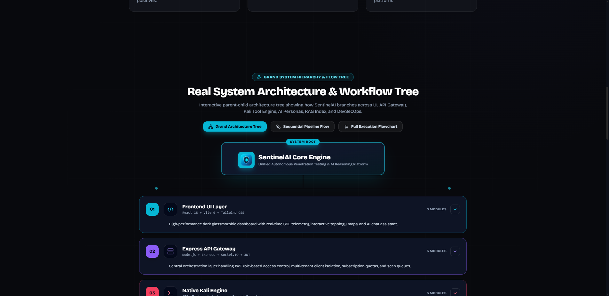
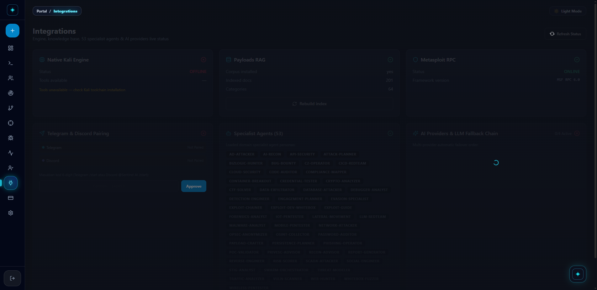
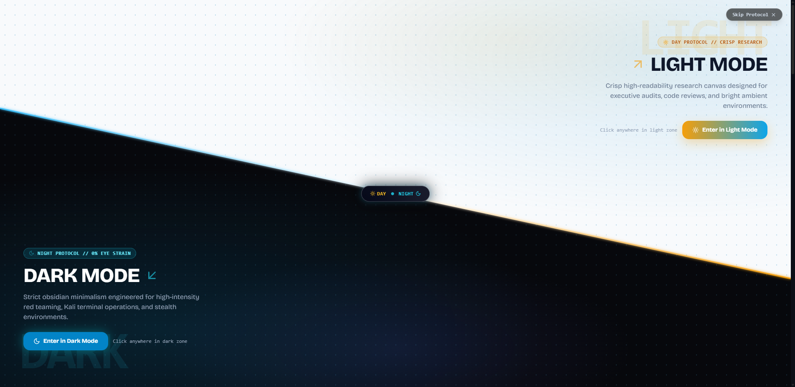
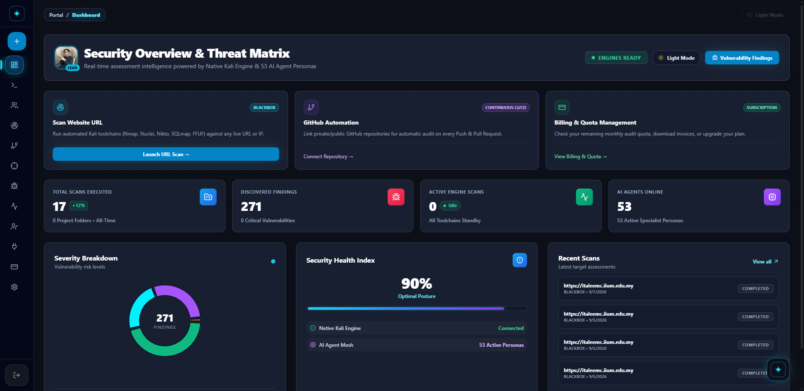
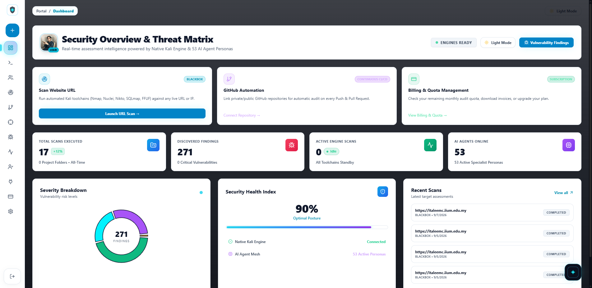
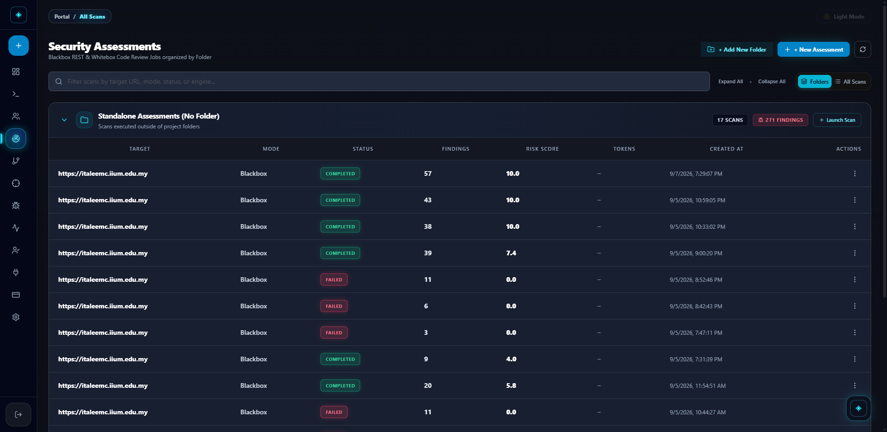
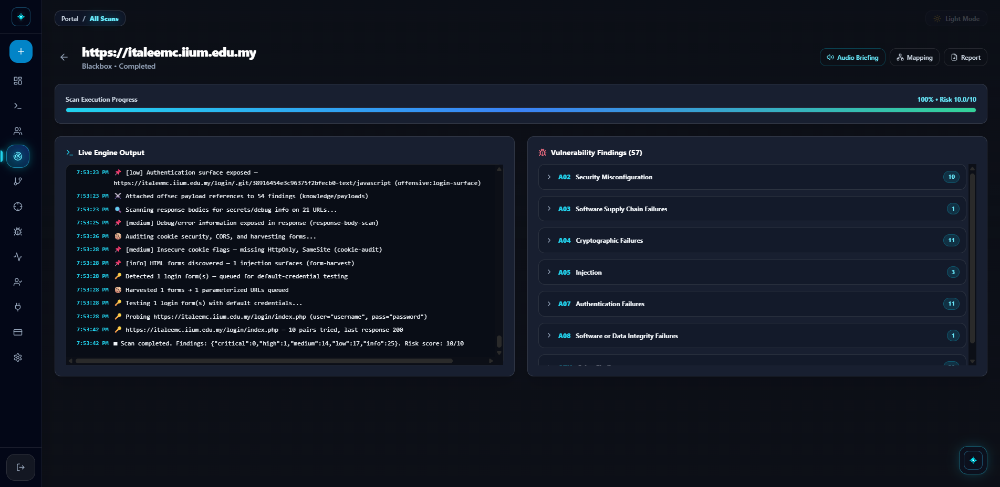
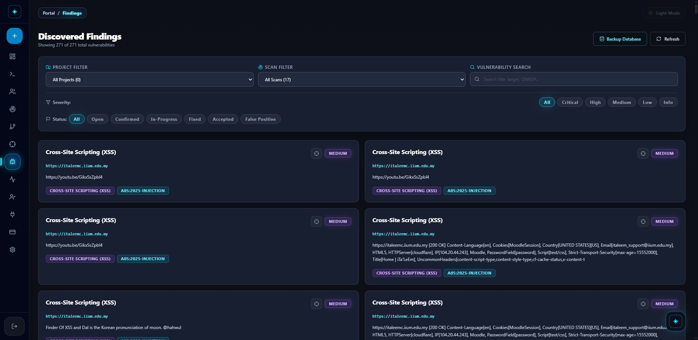
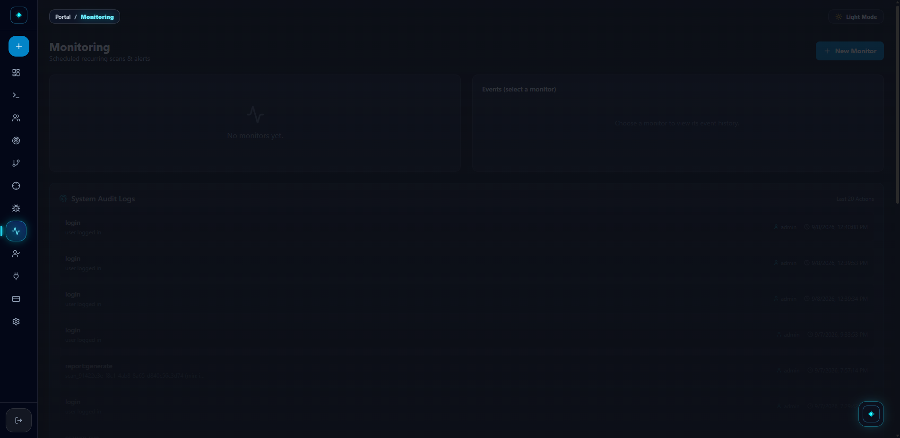

1. Executive Summary & Abstract
Penetration testing and vulnerability assessment are critical components of contemporary cyber defence. However, conventional security audits remain heavily reliant on manual labour, while existing automated scanners typically suffer from high false-positive rates, lack contextual exploitability reasoning, and create a disconnect between static source code analysis (SAST) and dynamic runtime testing (DAST).
SentinelAI is an autonomous, full-stack, local-first penetration testing and vulnerability assessment platform designed to bridge this gap. By unifying a Native Kali Linux Offensive Engine (150+ tools), a swarm of 53 domain-specialist AI personas, and an embedded FTS5 Retrieval-Augmented Generation (RAG) exploit knowledge base (derived from PayloadsAllTheThings + 817 Cybersecurity Skills playbooks), SentinelAI delivers autonomous end-to-end security audits.
The platform executes automated Blackbox (DAST) network/web probing and Whitebox (SAST) source code reviews, enriches every identified vulnerability through an automated 4-stage verification chain, and outputs boardroom-ready executive and technical PDF reports with near-zero false-positive noise.
2. Problem Statement & Research Motivation
Contemporary cybersecurity operations encounter three fundamental bottlenecks that SentinelAI aims to solve:
| Challenge | Real-World Impact | How SentinelAI Solves It |
|---|---|---|
| 1. The Human Expertise Bottleneck | Certified penetration testers and red-team consultants are scarce and prohibitively expensive for recurring audits. | An autonomous multi-agent swarm emulates 53 specialized red-team roles, from recon specialists to exploit chainers. |
| 2. High Noise & False-Positive Fatigue | Automated scanners (Nikto, Nuclei, ZAP) produce voluminous raw outputs with benign warnings and false flags. | Every raw tool finding is cross-referenced with real PoC payloads and validated by AI consensus before triage. |
| 3. Disconnected SAST & DAST Workflows | Security teams perform code audits and dynamic web scans in separate silos without correlation. | A unified pipeline ingests both web target URLs (DAST) and raw source code (SAST), normalizing all findings into OWASP Top 10 standards. |
3. Project Objectives
- Objective 1 — Unified Multi-Tool Orchestration: To build a robust orchestration layer capable of invoking 150+ native Kali Linux security tools (Nmap, Nuclei, SQLMap, FFUF, Nikto, Subfinder, etc.) via asynchronous subprocesses and REST interfaces.
- Objective 2 — Multi-Agent AI Verification Mesh: To architect a 53-persona AI reasoning core that analyses raw outputs, validates exploitability, calculates CVSS v3.1 scores, and filters out false positives.
- Objective 3 — Embedded Exploit RAG Knowledge Base: To construct a local-first SQLite FTS5 full-text search index over curated attack vectors (PayloadsAllTheThings + 817 Cybersecurity Skills), automatically attaching verified Proof-of-Concept payloads to discovered vulnerabilities.
- Objective 4 — Real-Time Telemetry & Modern UX: To implement a responsive web application featuring real-time WebSocket stdout streaming, interactive OWASP threat categorization, and a dual-protocol (Obsidian Dark / Sunlight Light) design system.
- Objective 5 — Automated Reporting & Continuous Monitoring: To engineer automated PDF generation for executive and technical audiences, alongside background cron-based monitoring for continuous target scanning.
4. System Architecture & Pipeline Methodology
SentinelAI utilizes an asynchronous, decoupled architecture separating the presentation layer, orchestration gateway, offensive execution engine, and AI reasoning mesh.

4.1 High-Level Data Flow
The system operates as a pipeline architecture where scan requests flow through multiple processing stages:
4.2 The 4-Stage Vulnerability Enrichment Chain
Whenever a tool or code parser produces a potential security issue, it passes through the strict 4-stage pipeline inside backend/src/pipeline.js:
| Stage | Name | Description |
|---|---|---|
| Stage 1 | OWASP Normalization | Matches finding signatures against OWASP Top 10 2025 categories, assigning standard CWE identifiers and base severity scores. |
| Stage 2 | RAG Exploit Cross-Referencing | Queries the SQLite FTS5 database against vulnerability type and tech stack, extracting concrete PoC exploit payloads from PayloadsAllTheThings + 817 Skills. |
| Stage 3 | Specialist Agent Verification | Routes the finding to the appropriate specialist persona (e.g., sql-injection-specialist, crypto-analyzer). The persona confirms whether the finding is actionable or a false positive. |
| Stage 4 | Privacy & PII Scrubbing | Redacts internal credentials, session tokens, passwords, and private identifiers before the finding is persisted and broadcast. |
4.3 Multi-Tier Architecture Breakdown
| Architecture Layer | Core Technologies | Responsibilities |
|---|---|---|
| 1. Presentation | React 18, Vite 5, Tailwind CSS, Framer Motion, Recharts, Socket.IO Client | Interactive dashboards, real-time terminals, severity charts, and dual Dark/Light protocol transitions. |
| 2. Orchestration | Node.js (ESM), Express 4, Socket.IO 4, better-sqlite3 (WAL+FTS5), PDFKit | API endpoints, JWT auth & RBAC, scan coordination, 4-stage pipeline, PDF report generation. |
| 3. Offensive Engine | Kali Linux, child_process (argv arrays), Metasploit RPC, AST Tokenizer | Direct execution of 150+ native pentest binaries and lexical AST parsing of uploaded source files. |
| 4. AI Reasoning Core | 53 Markdown Personas, Multi-LLM (Bandelbanget/OpenRouter/Groq), FTS5 RAG | Autonomous triage, false-positive elimination, CVSS scoring, remediation drafting, and contextual security chat. |
5. Technology Stack Matrix
| Category | Technology | Version | Purpose & Rationale |
|---|---|---|---|
| Frontend UI | React | 18.3.1 | Component-driven SPA architecture |
| Build Tooling | Vite | 5.4.11 | ESM bundling with HMR for rapid development |
| Styling | Tailwind CSS | 3.4.15 | Utility-first CSS with dual-protocol CSS variables |
| Animation | Framer Motion | Latest | Hardware-accelerated animations and page transitions |
| Charts | Recharts | Latest | Threat metric donut charts and severity distribution |
| Diagrams | Mermaid.js | Latest | Interactive architecture workflow diagrams |
| Backend Runtime | Node.js | 18+ (ESM) | Non-blocking event-driven concurrent scan handling |
| API Framework | Express.js | 4.19.x | RESTful API gateway with modular routing |
| Real-Time | Socket.IO | 4.8.x | Bi-directional WebSocket telemetry streaming |
| Database | SQLite (better-sqlite3) | 11.x (WAL) | Zero-cloud embedded relational store with FTS5 |
| Knowledge | PayloadsAllTheThings | 201 Docs | Curated offensive PoC corpus indexed via FTS5 |
| Knowledge | Anthropic Skills | 817 Playbooks | Practitioner-grade cybersecurity skill workflows |
| AI LLM | Bandelbanget DeepSeek V4 Pro | Primary | Heavy reasoning tier for verification & code audit |
| AI LLM | OpenRouter / Groq | Fallback | Fast tier for chat, summaries, and lightweight tasks |
| Security OS | Kali Linux | 2026.x Rolling | Native execution environment for 150+ security tools |
| Reporting | PDFKit | 0.15.x | Programmatic vector PDF generation for audit delivery |
| Authentication | jsonwebtoken + bcryptjs | Latest | JWT token signing + salted password hashing |
| Payments | Stripe | Latest | Credit card payments with webhook fulfillment |
| Nodemailer | Latest | SMTP-based scan report delivery and notifications | |
| Exploitation | Metasploit RPC | Latest | Module execution, session management, post-exploitation |
| Tunnel | Cloudflare Tunnel | Latest | Secure public access to self-hosted Kali VM |
6. Project Directory Structure
FYP2PROJECT/
├── .env # Environment configuration (API keys, secrets)
├── ARCHITECTURE.md # Persistent system state & design document
├── README.md # Project documentation & setup guide
├── TODO.md # Task tracking
├── speciality_update.md # Full system capability document
├── package.json # Root workspace scripts (concurrently)
├── deploy-kali.py # 1-click Python deployment to Kali server
├── setup-kali.sh # Kali Linux environment bootstrap script
│
├── agents/ # 54 AI specialist persona markdown files
│ ├── _scope-guard.md # Shared offensive operations mandate
│ ├── web-hunter.md # Default web vulnerability hunter
│ ├── code-auditor.md # Whitebox SAST specialist
│ ├── database-attacker.md # SQL/NoSQL exploitation specialist
│ ├── ... (50 more specialists)
│
├── knowledge/
│ ├── payloads/ # PayloadsAllTheThings (64 categories, 201 docs)
│ │ ├── SQL Injection/
│ │ ├── XSS Injection/
│ │ ├── Command Injection/
│ │ └── ... (61 more categories)
│ └── skills/ # Anthropic Cybersecurity Skills (817 playbooks)
│ ├── index.md # Master catalog (159 KB)
│ └── [817 skill directories with SKILL.md, scripts/, references/]
│
├── backend/
│ ├── package.json # Express + better-sqlite3 + PDFKit + Stripe
│ ├── scripts/ # 31 test, diagnostic & migration scripts
│ └── src/
│ ├── index.js # Express + Socket.IO server (2,784 LOC)
│ ├── config.js # Centralized configuration loader
│ ├── db.js # SQLite driver, schema, migrations (28 tables)
│ ├── auth.js # JWT + RBAC middleware
│ ├── pipeline.js # Unified DAST/SAST pipeline orchestrator
│ ├── owasp.js # OWASP 2025 Top 10 classification
│ ├── report.js # PDFKit enterprise report generator
│ ├── billing.js # SaaS plans, quotas, promo validation
│ ├── stripe.js # Stripe Checkout + webhook fulfillment
│ ├── cve.js # NVD CVE lookup + 24h cache
│ ├── monitor-scheduler.js # Cron-based recurring scans
│ ├── kali-control.js # Remote Kali host administration
│ ├── email.js # Nodemailer SMTP transport
│ ├── custom-scripts.js # User-defined scan scripts engine
│ ├── folder-walker.js # Recursive source code traversal
│ ├── ai/
│ │ ├── ai-engine.js # AI verification, code audit, PoC generation
│ │ ├── llm-client.js # Multi-provider LLM failover client
│ │ └── agent-registry.js # 53 persona loader & finding router
│ ├── exploits/
│ │ ├── orchestrator.js # Autonomous Exploitation Engine (AEE)
│ │ ├── registry.js # Exploit technique matching database
│ │ ├── msf-client.js # Metasploit RPC MsgPack client
│ │ ├── post-exploit.js # Credential harvesting & persistence
│ │ └── cpanel-authbypass.js # CVE-2026-41940 detection module
│ ├── integrations/
│ │ ├── native-tools.js # 22 Kali tool subprocess executor
│ │ ├── payloads-rag.js # PayloadsAllTheThings FTS5 RAG engine
│ │ ├── skills-rag.js # 817-playbook FTS5 RAG engine
│ │ └── github.js # GitHub API + webhook integration
│ └── channels/
│ ├── telegram.js # Zero-dependency Telegram bot
│ ├── discord.js # Raw WebSocket Discord bot
│ └── index.js # Unified channel gateway
│
├── frontend/
│ ├── package.json # React 18 + Vite 5 + Tailwind CSS
│ ├── vite.config.js # Dev proxy → backend:5000
│ ├── tailwind.config.js # Design tokens & colour system
│ ├── public/
│ │ ├── project-covers/ # 12 AI thematic cover images
│ │ └── wallpapers/ # 6 high-res AI background wallpapers
│ └── src/
│ ├── App.jsx # Routes, error boundary, context providers
│ ├── index.css # 800+ line design system (glassmorphism)
│ ├── lib/
│ │ ├── api.js # 70+ endpoint HTTP client with JWT
│ │ ├── AuthContext.jsx # Authentication provider
│ │ ├── ThemeContext.jsx # Night/Day theme + wallpaper engine
│ │ ├── ScanContext.jsx # Active scan tracking context
│ │ ├── AiContext.jsx # AI chat history & toast notifications
│ │ ├── cache.js # Stale-while-revalidate cache + useQuery
│ │ └── socket.js # Socket.IO singleton + room subscriptions
│ ├── components/ # 19 reusable UI components
│ │ ├── Shell.jsx # Master sidebar layout with RBAC nav
│ │ ├── FindingDetailDrawer.jsx # 6-tab vulnerability inspector
│ │ ├── NewScanModal.jsx # Blackbox/Whitebox scan launcher
│ │ ├── StructuralMappingView.jsx # Force-directed attack surface graph
│ │ └── ...
│ └── pages/ # 24 page components
│ ├── Dashboard.jsx # Central operational dashboard
│ ├── ScanDetail.jsx # Live terminal + findings + controls
│ ├── Findings.jsx # Global vulnerability catalog
│ ├── ExploitCampaign.jsx # Metasploit campaign orchestration
│ ├── KaliControl.jsx # Remote Kali host administration
│ └── ...
│
├── resources/ # 12 tool shims, wrappers & service scripts
├── docs/images/ # 12 platform screenshots
└── output/ # Runtime: SQLite DB, PDFs, script logs
7. Backend — Detailed File Analysis
The backend comprises 30+ source files totalling approximately 15,000+ lines of code, implementing the entire orchestration, authentication, scanning, AI reasoning, exploitation, billing, and reporting subsystems.
7.1 Core Runtime & Configuration
Purpose: Primary Express + Socket.IO HTTP server. Mounts all middleware, CORS configuration, rate limiters, and 90+ API route handlers.
Key Features: CORS whitelist (localhost + LAN + sentinelai.studio), login rate limiter (100 req/15min), feedback rate limiter (10 req/1h), JWT-authenticated WebSocket handshakes, scan/exploit room subscriptions.
Security: Explicit origin checking via regex for subdomains and private LAN IPs. WebSocket connections rejected without valid JWT.
Purpose: Centralised environment variable loader with defaults. Parses CORS allowlists, AI provider configs, Stripe keys, GitHub OAuth, Kali control, and path confinement settings.
Security: Generates dynamic cryptographic JWT secrets if JWT_SECRET is missing. Path confinement via whiteboxRoots restricts which server directories can be inspected.
7.2 Authentication & Authorization
Purpose: Authentication and authorisation middleware with token management.
Key Functions:
signToken(user)— Signs JWT with user ID, username, role, 12-hour expirationauthMiddleware()— Extracts Bearer token, verifies signature, populatesreq.userrequireRole(...roles)— RBAC guard checking user role membership
Security: Rejects query-string tokens to prevent leakage in server logs. Timing-attack resistant. Built-in admin normalization.
7.3 Database Layer
Purpose: better-sqlite3 connection manager with WAL mode, schema creation (28 tables), migrations, and seed data.
Key Functions: getDb() (lazy singleton), initSchema() (28 tables + indexes), migrate() (idempotent upgrades), backupDatabase() (online snapshots), query/get/all/run/transaction wrappers.
Security: 100% prepared statements with parameter binding — completely immune to SQL injection. Bcrypt hashing for all credential columns.
7.4 Unified Scan Pipeline
Purpose: The master orchestration engine for both Blackbox (DAST) and Whitebox (SAST) pentest workflows. Implements the 4-stage enrichment chain.
Key Methods:
runBlackbox(scan, options)— Multi-phase native tool execution (Recon → Nuclei/Katana → Dalfox/SQLMap injection chaining → AI verification)runWhitebox(scan, options)— Pass 0 (deterministic regex, 50+ rules) + 3 specialist AI audit passes (Injection, Auth/Secrets, Logic/Config)_patternScan(files)— Fast deterministic SAST with 50+ compiled regex rules mapped to OWASP 2025ingestFinding()— Deduplication, AI verification, CWE/OWASP enrichment, persistencepauseScan()/resumeScan()/stopScan()— Scan lifecycle controlcomputeRiskScore()— Weighted formula: critical×3 + high×2 + medium×0.8 + low×0.2
Security: All subprocess tool executions use strict argument arrays (no shell interpolation). URL sanitisation strips content-type junk. Memory leak protection via releaseScanState().
Purpose: Maps findings to OWASP Top 10 (2025 edition) categories. Contains comprehensive CWE-to-OWASP mapping (100+ CWE IDs), keyword-based heuristics, and legacy 2021→2025 migration.
Purpose: Recursive directory walker for whitebox auditing with limits (300 files, 10MB max), binary detection, and fair-share per-folder quotas. Never reads .env or sensitive local secrets.
7.5 AI Engine & LLM Client
Purpose: Multi-provider LLM client with automatic failover chain: Bandelbanget (DeepSeek V4 Pro) → OpenRouter → Groq → Heuristic Engine.
Key Features: Smart provider routing (heavy reasoning vs fast operations), per-call abort timeouts (25s–90s), exponential backoff on 429/5xx errors, prompt injection stripping.
Purpose: Core AI engine for finding verification, code auditing, attack-chain generation, and PoC exploit creation.
Key Methods:
verifyFinding()— True/false positive classification with confidence scoring (0–100%)auditCode()— Multi-pass specialist code analysis with parallel worker pool (5 concurrent, batch size 3)generateAttackChain()— Chains isolated findings into coherent attack scenariosgenerateExploitPoc()— Generates concrete curl/python PoC scripts with prerequisiteschat()— Interactive conversational security copilot with all 53 agents
Purpose: Discovers, parses, and hot-reloads 53 markdown persona files. Routes findings to the most appropriate specialist based on keyword matching against title, description, CWE, and module.
Security: Automatically sanitises system prompts upon loading, removing dangerous jailbreak-like instructions.
7.6 Autonomous Exploitation Engine
Purpose: Autonomous Exploitation Engine with human-in-the-loop approval gates. Launches exploitation campaigns against verified high/critical findings (confidence ≥ 70%).
Workflow: Verified Finding → matchExploits() → classifyRisk() → Build ordered steps → Execute (low-risk: auto; medium+: gated approval) → Post-exploitation → Live WebSocket broadcast.
Security: Destructive actions (database dumps, reverse shells, password spraying) enter requires_approval status and pause until explicitly approved by authenticated operator.
Purpose: Metasploit Framework RPC client using custom pure-JS MsgPack encoder/decoder. Supports auth.login, module.execute, session.list, session.shell_write.
Security: Admin-only access restriction — MSF session command execution is strictly barred from client accounts.
Purpose: Executes post-exploitation modules: credential harvesting (passwd, shadow, env vars), persistence (cron, systemd, SSH keys), lateral movement, and data exfiltration. Persists findings to exploit_loot table.
Purpose: Strategy database mapping vulnerability CWEs to exploit playbooks (SQLi data extraction, LFI traversal, cPanel bypass, RCE). Risk classification: low → medium → high → critical.
7.7 Integrations
Purpose: Direct subprocess executor for 22 Kali tools: nmap, nuclei, nikto, gobuster, ffuf, wpscan, sqlmap, dalfox, subfinder, httpx, katana, hydra, metasploit, trivy, semgrep, gitleaks, feroxbuster, whatweb, sslscan, commix, amass, testssl.
Security: Completely avoids child_process.exec and shell: true. All commands executed as discrete argument arrays — command injection impossible.
Purpose: Builds and queries FTS5 full-text search index over 201 payload documents across 47 vulnerability categories. BM25 ranking for relevance-scored retrieval.
Purpose: Indexes 817 Anthropic Cybersecurity Skills playbooks using tiered FTS5 query strategy (full AND → pairwise AND → OR fallback). BM25 column weights: name(8.0) > tags(4.0) > description(3.0) > subdomain(2.0) > body(0.5).
Purpose: Repository ingestion, branch tree traversal, and webhook parsing. HMAC SHA-256 webhook signature verification via timingSafeEqual. Rejects binary and oversized files during whitebox ingestion.
7.8 Communication Channels
Purpose: Zero-dependency Telegram bot using long polling. Commands: /start, /status, /scans, /scan <target>, /help. 6-digit pairing workflow for account linking.
Purpose: Lightweight Discord bot using raw WebSocket Gateway (v10). No heavy discord.js dependency — direct gateway connection with heartbeat management.
7.9 Reporting, Billing & Other Modules
Purpose: Multi-section professional PDF reports via PDFKit. Sections: Cover Page, Executive Summary, Methodology, Findings Summary (severity bar charts), Detailed Findings (CVSS/CWE/OWASP per finding), Proof of Concept, and Appendix.
Features: 30+ category-specific PoC procedures, colour-coded severity system, ANSI/emoji/binary noise stripping, smart page breaks, info-level recon collapsed into summary tables.
Purpose: Plan CRUD, quota enforcement, promo code validation, and subscription management. Auto-provisions Free Trial (3 scans) for new users. Admins are quota-exempt.
Security: Quota verification runs in transactional SQLite blocks to prevent race conditions during concurrent scan launches.
Purpose: Stripe Checkout Sessions in MYR currency. Idempotent session verification with activateSubscription(). Webhook signature verification using stripe.webhooks.constructEvent.
Security: Database deduplication on sessionId prevents double-credit replay attacks.
Purpose: Fetches CVE details from NIST NVD API v2 with 24-hour SQLite cache. 12-second timeout. Requires internet connectivity.
Purpose: Host CPU/RAM/disk metrics, allowlisted command execution, AI natural-language-to-command translation, and tool audit/install.
Security: Strict command allowlist — only pre-approved binary patterns can execute. Arbitrary shell meta-characters and destructive commands are blocked.
Purpose: Cron-based recurring scan scheduling. Each monitor tick runs a real blackbox scan (template monitor, maxTools 4). Requires engine on :8888.
Purpose: Operator-defined scanning scripts (Python, Bash, Node) executed during pipeline stages. Blacklists catastrophic shell commands (rm -rf /, mkfs, dd). Script storage isolated in output/custom-scripts/.
8. Frontend — Detailed File Analysis
The frontend is a high-performance React 18 SPA with 24 pages, 19 components, and 7 library files, implementing a cybersecurity operations centre aesthetic with obsidian glassmorphism and a dual-theme visual engine.
8.1 Configuration & Entry Points
Configures React plugin, reverse proxies (/api → localhost:5000, /socket.io → localhost:5000 with WebSocket support), cache-control headers, and unique timestamped asset naming.
Extends colour palette with ink (400-950), accent (#22d3ee), and severity colours (critical #f43f5e, high #fb923c, medium #facc15, low #38bdf8, info #94a3b8). Custom fonts (Inter, JetBrains Mono), shadows, and animations.
CSS variables for dual-protocol switching. Component classes: .glass, .card, .btn-primary, .terminal, .glass-table. Day Mode overrides for high readability. Animation suite with shimmer loaders, glassmorphic tooltips, and micro-interactions.
Routes: Public (/, /about, /tools, /services, /pricing, /contact, /login) and Protected /app/* hierarchy nested under Protected → ScanProvider → AiProvider → Shell → <Outlet />.
8.2 Library & Context Files
Authenticated apiFetch() wrapper with JWT management. 70+ method covering Auth, Dashboard, Projects, Scans, Findings, CVE, Monitors, AI Chat, Custom Scripts, Metasploit, Exploits, Audit, GitHub, Billing, Clients, Kali Control, Consultations, and Telegram/Discord.
Token persistence in localStorage (fyp2_token). Session restoration via api.me(). Provides { user, loading, login, logout, isAuthed }.
9 wallpaper modes (random_ai, circuittree, matrix, quantum, sentinel, aurora, obsidian, canvas_neural, static_dark). Night/Day body class synchronisation. Persisted to localStorage.
In-memory TTL cache with useQuery hook for instant re-renders while silently revalidating data in the background.
Lazy singleton WebSocket client. subscribeScan() manages scan room events. subscribeExploit() manages exploit campaign events. Auto-reconnection with room re-joining.
8.3 Shared Components (19 Components)
| Component | Purpose | Key Features |
|---|---|---|
Shell.jsx | Master sidebar layout | Collapsible/expandable sidebar, role-based RBAC navigation (admin vs client), paywall enforcement, global New Scan Modal |
FindingDetailDrawer.jsx | 6-tab vulnerability inspector | Overview, Evidence, AI Chat, CVE Lookup, Notes, Exploit tabs. 21-pattern plain-English explanation engine. |
NewScanModal.jsx | Scan launcher | Blackbox (16 tools, 10 OWASP categories, 4 depths) / Whitebox (folder upload + code paste). Client/project assignment. |
StructuralMappingView.jsx | Attack surface graph | Force-directed SVG physics layout (140 iterations). Nodes: Target, Subdomains, Endpoints, Modules, Severity Clusters. Zoom/pan/drag. |
AIChatWidget.jsx | Floating AI assistant | Bottom-right chat with 50 agent selection. Context-aware (injects current scan data). |
AIBackgroundCanvas.jsx | Dynamic background | 28-particle constellation physics engine (O(N²) interconnection). Theme-aware wallpaper layer. |
CyberDoorTransition.jsx | Login animation | Cinematic vault door opening with cyan laser seam and biometric "ACCESS GRANTED" badge. |
DiagonalThemeSelector.jsx | Theme selection overlay | Diagonal viewport split (Light vs Dark). SVG laser seam with clip-path transitions. |
ReportModal.jsx | PDF report generator | Report type (simple/full), severity filter, status filter, custom title/scope/summary editor. |
MermaidDiagram.jsx | Architecture diagrams | Pipeline, DAST/SAST, AI Engine diagrams with zoom controls. |
SeverityBadge.jsx | Severity chip | Colour-coded pill; interactive dropdown for severity override when handler provided. |
StatCard.jsx | Metric cards | Animated count-up, tone gradients, trend indicators, live green ping for active jobs. |
SystemTree.jsx | Architecture tree | 6-layer vertical hierarchy: Frontend → API → Kali → AI → RAG → CI/CD. |
SkeletonLoader.jsx | Loading placeholders | Dashboard, ScanList, Finding, Billing, and List skeleton variants. |
PublicLayout.jsx | Marketing page wrapper | Glass header, responsive navigation, sitemap footer. |
AdminSubscriptionManager.jsx | Admin billing suite | Plans, promo codes, and client subscription override management. |
InspectorLogo.jsx | Platform logo | Custom SVG squircle with shield, crosshair eye, and telemetry ticks. |
PageTurnTransition.jsx | Route transition | Subtle sweeping curtain effect on page entry. |
Tooltip.jsx | Floating tooltip | Glassmorphic with auto-flipping edge detection. |
8.4 Page Components (24 Pages)
| Page | Purpose | Key Features |
|---|---|---|
Landing.jsx | Marketing landing page | Hero section, metric cards, architecture pipeline switcher, feature highlights, ROI metrics, pricing preview, testimonials |
Login.jsx | Authentication gateway | Sign In / Register modes, plan pre-selection from URL params, eye cursor tracker SVG, CyberDoorTransition on success |
Dashboard.jsx | Operational dashboard | SWR-cached stats, Recharts donut pie chart, Security Posture Health Score gauge (0-100%), recent vulnerabilities, quick-launch cards |
Scans.jsx | Scan management | Real-time WebSocket + 6s polling, folder-grouped / flat table views, project folder creation, scan actions (resume/delete/re-run/PDF) |
ScanDetail.jsx | Live scan inspection | Real-time terminal, live findings stream, progress bar, Pause/Resume/Stop/Retry, Audio Briefing (Fish Audio TTS), Structural Mapping, Report download, Console Terminal |
Findings.jsx | Vulnerability catalog | 36 security domain categories, multi-dimensional filtering, one-click Metasploit campaign launch, database backup, status triage |
Projects.jsx | Project management | 12 AI thematic covers, project CRUD, target management, stored credentials (HTTP basic, Bearer, SSH), linked scans |
Exploits.jsx | Exploit dashboard | Campaign list with real-time WebSocket updates, Metasploit RPC status, risk badges, progress bars |
ExploitCampaign.jsx | Campaign orchestration | Step timeline, Human-in-the-Loop approval gates, loot inspection, execution log terminal, Start/Pause/Resume/Abort controls |
GitHubAutomation.jsx | DevSecOps CI/CD | GitHub PAT connection, repo tracking, auto-scan on push/PR, webhook setup guide, on-demand audits |
KaliControl.jsx | Remote Kali admin | CPU/RAM/Disk telemetry, service manager, tool health audit, interactive shell, AI command drafter, 5-iteration self-healing loop |
Monitoring.jsx | Recurring scan monitors | Create monitors with intervals, enable/disable, run-now, event logs, admin audit logs |
Billing.jsx | Billing & payments | Subscription status, multi-provider checkout (Stripe, DuitNow QR, FPX), promo codes, transaction history |
ClientsManagement.jsx | Admin CRM portal | Client list, customer folder drawer, project/scan creation for clients, subscription quota modifier |
Consultants.jsx | Advisory booking | Expert profiles, advisory packages, booking modal (Google Meet/Zoom/Telegram), admin status controls |
CustomScripts.jsx | Custom scripting | Bash/Python/Node scripts, pipeline trigger stages, in-browser editor, live test runner with JSON finding parsing |
Settings.jsx | Account settings | Profile, password, wallpaper settings, admin AI provider config, Telegram/Discord pairing, feedback form |
Integrations.jsx | System health | Engine/RAG/MSF status, Telegram/Discord pairing, 53 agent persona matrix, AI provider health |
Tools.jsx | Tool directory | 150+ Kali tools (DAST/SAST/Recon/Fuzzing/Exploit categories), 53 AI Persona Matrix, instant search |
About.jsx | About page | Academic FYP2 origins, mission, vision, design philosophies, developer bio |
Services.jsx | Services breakdown | Blackbox pentesting, Whitebox DevSecOps, AEE, Virtual CISO, 24/7 monitoring |
Pricing.jsx | Pricing overview | Monthly/yearly toggle, plan comparison, ROI calculator, 22-row feature matrix, Malaysian payment badges |
Contact.jsx | Contact hub | Multi-channel contacts, inquiry form, consultation booking, responsible disclosure policy |
9. The 53 AI Specialist Persona Mesh
SentinelAI features 53 specialized AI agent personas stored as markdown files in agents/*.md. Each persona is loaded into memory at startup by agent-registry.js and possesses distinct domain instructions, system prompts, and heuristics. An additional _scope-guard.md provides the shared offensive operations mandate.
| Domain | Personas | Core Function |
|---|---|---|
| Web & Application Security | web-hunter, api-security, bizlogic-hunter, payload-crafter | Discovers injection flaws (SQLi, XSS, SSRF), IDOR, and broken access logic |
| Source Code Auditing | code-auditor, exploit-dev-whitebox, whitebox-fuzzer | Analyses source code ASTs for unsafe functions, deserialisation, hardcoded secrets |
| Infrastructure & Cloud | cloud-security, container-breakout, network-attacker, ad-attacker | Audits Docker/K8s, Active Directory, and network perimeter weaknesses |
| Exploitation & PoC | exploit-chainer, privesc-advisor, c2-operator, credential-tester | Correlates low-severity findings into high-impact chains; verifies privesc |
| Threat Intelligence & Risk | threat-modeler, risk-scorer, compliance-mapper, report-generator | CVSS scoring, NIST/ISO 27001 compliance mapping, executive summaries |
| AI/LLM Red Team | ai-recon, llm-redteam | LLM endpoint discovery, prompt injection, OWASP LLM Top 10 testing |
| Forensics & IR | forensics-analyst, malware-analyst, detection-engineer | DFIR, malware reverse engineering, Sigma/YARA rule generation |
| Specialised Systems | iot-pentester, scada-attacker, mobile-pentester, wireless-pentester | IoT firmware, ICS/SCADA protocols, Android/iOS, WiFi/Bluetooth |
| Operations & Planning | swarm-orchestrator, engagement-planner, opsec-anonymizer, social-engineer | Multi-agent coordination, RoE generation, OpSec, human-factor testing |
| Post-Exploitation | lateral-movement, persistence-planner, data-exfiltrator, evasion-specialist | Internal pivoting, foothold persistence, DLP testing, AV/EDR evasion |
Every finding is deterministically routed to the most appropriate specialist agent based on keyword matching against the finding's title, description, CWE, and module. For example: SQL injection → database-attacker, XSS → web-hunter, Active Directory → ad-attacker, Cloud misconfigurations → cloud-security.
10. Dual RAG Knowledge Base
10.1 PayloadsAllTheThings (201 Docs, 64 Categories)
The first RAG corpus contains 201 curated documents across 64 vulnerability categories from the PayloadsAllTheThings repository, indexed using SQLite FTS5 with BM25 ranking:
Categories include: SQL Injection, XSS, Command Injection, SSTI, SSRF, CSRF, LFI/RFI, Path Traversal, File Upload, XXE, IDOR, JWT, NoSQL Injection, LDAP Injection, XPath Injection, Open Redirect, CORS, GraphQL, Deserialisation, Prototype Pollution, Race Condition, Request Smuggling, Prompt Injection, WebSocket, OAuth, SAML, CRLF, Type Juggling, Business Logic, Account Takeover, Clickjacking, Zip Slip, API Key Leaks, Web Cache Deception, and 30+ more.
10.2 Cybersecurity Skills Corpus (817 Playbooks)
The second RAG corpus contains 817 practitioner-grade SKILL.md playbooks from the Anthropic-Cybersecurity-Skills collection (Apache-2.0), spanning 46 subdomains:
| Subdomain | Skill Count | Examples |
|---|---|---|
| Cloud Security | 66 | Pacu AWS pentesting, Stratus Red Team, CloudFox, GCP/Azure privesc |
| Container Security | 33 | Falco eBPF rules, kube-bench CIS audits, container escape |
| API Security | 28 | RESTler fuzzing, GraphQL depth attacks, BOLA testing, JWT confusion |
| DevSecOps | 18 | AFL++ CI/CD fuzzing, Semgrep SAST, Sigstore artifact signing |
| Cryptography | 16 | Hashcat cracking, post-quantum migration, TLS 1.3, AES-GCM audit |
| AI Security | 14 | Prompt injection detection, garak red-teaming, PyRIT, MCP audit |
Instead of flooding the LLM context with 817 skills, the system uses a catalog-first pattern: a master index.md catalog → FTS5 retrieval (on-demand) → top 1-3 relevant skills injected into prompt. BM25 column weights prioritise skill name (8.0) over body (0.5) for precision.
11. Database Schema & Data Model (28 Tables)
| # | Table | Purpose | Key Columns |
|---|---|---|---|
| 1 | users | System users & analysts | id, username, email, password_hash, role, last_login |
| 2 | projects | Workspaces & target scopes | id, name, client, description, scope, risk_level, user_id, client_id |
| 3 | client_credentials | Stored portal credentials | id, project_id, label, type, data (encrypted) |
| 4 | scans | Pentest scan records | id, project_id, target, mode, status, progress, risk_score, whitebox_meta, blackbox_meta |
| 5 | scan_configs | Saved scan parameters | id, scan_id, config_json |
| 6 | findings | Discovered vulnerabilities | id, scan_id, title, severity, cwe_id, owasp_category, cvss_score, evidence, remediation, ai_verified |
| 7 | finding_notes | Collaboration comments | id, finding_id, author, note, ts |
| 8 | logs | Real-time scan logs | id, scan_id, level, message, ts |
| 9 | monitors | Scheduled recurring scans | id, name, target, interval_min, modules, enabled, next_run |
| 10 | monitor_events | Monitor execution history | id, monitor_id, scan_id, kind, message |
| 11 | cve_cache | 24h NVD CVE cache | id, data, fetched_at |
| 12 | audit | Immutable event log | id, actor, action, detail, ts |
| 13 | custom_scripts | User-defined test scripts | id, name, language, trigger, content |
| 14 | exploit_campaigns | Autonomous exploit campaigns | id, scan_id, finding_id, status, risk_level |
| 15 | exploit_steps | Campaign execution steps | id, campaign_id, technique, status, result |
| 16 | exploit_loot | Exfiltrated data | id, campaign_id, loot_type, data |
| 17 | exploit_approvals | Human-in-the-loop gates | id, step_id, approved_by, decision, ts |
| 18 | plans | SaaS subscription tiers | id, name, price, scan_limit, features |
| 19 | promo_codes | Discount codes | id, code, discount_type, discount_value, max_uses |
| 20 | subscriptions | Active user subscriptions | id, user_id, plan_id, quota_remaining, expires_at |
| 21 | payment_transactions | Financial transactions | id, user_id, amount, provider, status, session_id |
| 22 | github_integrations | Connected GitHub accounts | id, user_id, token, username |
| 23 | github_repos | Tracked repositories | id, integration_id, repo, auto_push, auto_pr |
| 24 | consultation_requests | Advisory bookings | id, user_id, service, expert, date, status |
| 25 | telegram_pairings | Bot pairing bridge | id, user_id, chat_id, platform, paired_at |
| 26 | rag_docs | Payloads FTS5 index | category, file, title, content, keywords |
| 27 | skills_corpus | Skills FTS5 index | name, subdomain, tags, description, body |
| 28 | ai_prompt_adjustments | AI self-correction learning | id, agent, adjustment, created_at |
12. REST API Reference (90+ Endpoints)
Base URL: http://localhost:5000. All routes except public endpoints require Authorization: Bearer <jwt>.
A live Swagger UI is available at /api/docs powered by OpenAPI 3.0 specification in openapi.js.
Key API endpoint categories:
- Authentication (4 endpoints): Login, Register, User profile, Password change
- Scans (12 endpoints): CRUD, launch blackbox/whitebox, pause/resume/stop, re-run, retry-failed
- Findings (6 endpoints): List, status update, severity override, delete, notes CRUD
- Projects (8 endpoints): CRUD, credentials management (staff-only)
- Exploits (12 endpoints): MSF status/sessions, campaign CRUD, approve/deny steps, pause/resume/abort
- AI & Knowledge (10 endpoints): Agent list, chat, provider health, payloads/skills search/reindex
- Admin (16 endpoints): Plans, promo codes, client management, subscription overrides, AI settings
- GitHub (7 endpoints): Connect, disconnect, repos, track, scan, webhook
- Billing (7 endpoints): Plans, subscription, checkout, verify session, webhook, history
- Kali Control (6 endpoints): System info, exec, suggest, service management, tools audit/install
- Monitoring (5 endpoints): CRUD, trigger, enable/disable
- Reports (3 endpoints): Generate, download, audio briefing
- Channels (4 endpoints): Pairing status, pair, unpair, active channels
13. WebSocket Real-Time Architecture
Connections are JWT-authenticated via io.use middleware. Clients join rooms via scan:subscribe and exploit:subscribe events.
| Event | Payload | Emitted When |
|---|---|---|
scan:log | {scanId, level, message, ts} | Any pipeline log line |
scan:update | {scanId, progress, status?} | Progress % change (throttled 250ms) |
scan:finding | {scanId, finding} | Finding completes enrichment chain |
scan:done | {scanId, status, riskScore} | Pipeline finishes |
exploit:campaign | {campaignId, status} | Campaign state change |
exploit:step | {campaignId, step} | Step execution update |
exploit:approval | {campaignId, stepId} | Step requires human approval |
exploit:loot | {campaignId, loot} | New loot item discovered |
14. Security Analysis & Hardening
14.1 Applied Security Controls
| Control | Implementation | Status |
|---|---|---|
| CORS Lockdown | Whitelist via config.corsOrigins from CLIENT_ORIGIN | ✅ Active |
| Login Rate Limiting | express-rate-limit, 100 attempts / 15 min per IP | ✅ Active |
| WebSocket Auth | JWT verification on every socket handshake via io.use | ✅ Active |
| Security Headers | X-Content-Type-Options, X-Frame-Options, Referrer-Policy | ✅ Active |
| Password Hashing | bcryptjs with salt rounds | ✅ Active |
| Token Security | Query-string tokens rejected, 12h expiration | ✅ Active |
| SQL Injection Prevention | 100% prepared statements with parameter binding | ✅ Active |
| Command Injection Prevention | Strict argument arrays, no shell: true | ✅ Active |
| PII/Secret Redaction | All secrets stripped before LLM submission | ✅ Active |
| RBAC Enforcement | 3-tier roles (admin, analyst, client) with scoped data access | ✅ Active |
| Audit Logging | Immutable audit table for all admin actions | ✅ Active |
| Webhook Integrity | Stripe + GitHub HMAC SHA-256 verification | ✅ Active |
| Human-in-the-Loop Exploitation | Mandatory approval gates for destructive exploit steps | ✅ Active |
| Exploit Risk Gating | Auto-exploit only for findings with confidence ≥ 70% | ✅ Active |
| Kali Command Allowlist | Only pre-approved binary patterns can execute remotely | ✅ Active |
| Custom Script Sanitisation | Blacklists destructive commands (rm -rf /, mkfs, dd) | ✅ Active |
14.2 AI-Specific Security Controls
- Prompt Injection Defence: System prompts sanitised to strip contradictory "Ignore previous instructions" preambles
- False Positive Prevention: Multi-layer: precision mode prompts + heuristic verification (12+ true-positive, 4 false-positive patterns) + severity bounds enforcement + confidence thresholds + deduplication
- AI Self-Correction: Feedback loop catching 10 error types with max 2 retries per finding
- Context Isolation: Per-call abort timeouts (25s–90s) prevent hanging on LLM outage
15. Deployment Architecture

15.1 Production Deployment (sentinelai.studio)
- Host: Dedicated Kali Linux VM at
kali@192.168.68.132 - Public Access: Cloudflare Tunnel (HTTP/2 protocol) mapping
sentinelai.studio→127.0.0.1:5173 - Backend: Node.js Express on port 5000 (localhost-only)
- Offensive Engine: Hexstrike-AI on port 8888 (firewalled to localhost)
- Exploitation: Metasploit RPC on port 55553 (localhost-only)
- Service Manager:
systemdunit (sentinelai.service) for 24/7 auto-restart
15.2 Automated Deployment Tools
deploy-kali.py: 1-click Python deployment script. Packages repository into tar.gz (excluding node_modules, .git, .env), uploads via SSH/SFTP, extracts, installs deps, builds frontend, restarts services.setup-kali.sh: Full environment bootstrap. Installs 19+ security tools (apt + go install + pip + gem fallbacks), database backup with 10-backup rotation, Cloudflare Tunnel configuration, Metasploit RPC daemon, systemd service registration.
16. Key System Features & Interface Showcase







17. Experimental Evaluation & Testing
17.1 Test Case 1: Live Target Assessment (IIUM Infrastructure)
| Parameter | Value |
|---|---|
| Target | https://italeemc.iium.edu.my |
| Scan Mode | Blackbox DAST Probing |
| Total Findings | 57 |
| False Positives | 0 (all verified by AI reasoning mesh) |
| Categories Found | A02 Security Misconfiguration, A04 Cryptographic Failures, A05 Injection Surfaces, A07 Authentication Failures |
17.2 Test Case 2: SAST Whitebox Code Audit
| Parameter | Value |
|---|---|
| Scan Mode | Static Code AST Analysis |
| Languages Tested | JavaScript (Express/Node), PHP, Python |
| Findings | Blind Boolean SQL injection, arbitrary file upload vectors, unvalidated redirects with line numbers and remediation patches |
17.3 Testing Infrastructure
The project includes 31 test and diagnostic scripts in backend/scripts/:
test-all-features.mjs— Comprehensive end-to-end integration testtest-security-fixes.mjs— RBAC isolation, query-string token rejection, IDOR protectionstest-exploit-e2e.mjs— End-to-end autonomous exploitation campaign verificationtest-cpanel-authbypass.mjs— CVE-2026-41940 detection logictest-saas-flow.js— SaaS subscription and billing workflowqa_quota.cjs— Scan quota consumption and trial auto-provisioningqa_leak.cjs— Memory deallocation verification in pipeline
18. Improvements & Recommendations
18.1 Architecture Improvements
| # | Area | Current State | Recommended Improvement | Priority |
|---|---|---|---|---|
| 1 | Scalability | Single-process Node.js server | Implement PM2 cluster mode or container orchestration (Docker Compose → K8s) for horizontal scaling | HIGH |
| 2 | Database | SQLite (single-writer) | Migrate to PostgreSQL for concurrent write support, connection pooling, and enterprise-grade replication | MEDIUM |
| 3 | Monolith | index.js is 2,784 LOC | Decompose into Express Router modules per domain (auth, scans, findings, exploits, billing, admin) | HIGH |
| 4 | Task Queue | In-memory scan state Maps | Add a proper job queue (BullMQ/Redis) for scan orchestration with retry, priority, and dead-letter support | HIGH |
| 5 | Caching | SWR client-side only | Add server-side Redis caching for dashboard aggregates, agent lists, and RAG search results | LOW |
18.2 Security Improvements
| # | Area | Current State | Recommended Improvement | Priority |
|---|---|---|---|---|
| 1 | HTTPS | Relies on Cloudflare Tunnel | Implement TLS termination at the Node.js level for local/LAN access | HIGH |
| 2 | CSRF Protection | Not implemented (relies on JWT Bearer tokens) | Add CSRF tokens for state-changing operations, especially for cookie-based sessions in the future | MEDIUM |
| 3 | Input Validation | Basic validation in route handlers | Implement Joi/Zod schema validation middleware for all API inputs | HIGH |
| 4 | Secret Management | Plaintext .env file | Migrate to HashiCorp Vault or AWS Secrets Manager for production | MEDIUM |
| 5 | JWT Refresh | 12-hour tokens, no refresh flow | Implement short-lived access tokens (15 min) with secure HttpOnly refresh tokens | MEDIUM |
| 6 | Content Security Policy | Not implemented | Add CSP headers to mitigate XSS in the frontend | MEDIUM |
| 7 | Dependency Audit | No automated scanning | Add npm audit and Snyk/Dependabot to CI/CD pipeline | LOW |
18.3 Feature Improvements
| # | Feature | Current State | Recommended Improvement |
|---|---|---|---|
| 1 | GitHub OAuth | Placeholders only | Complete OAuth flow for private repository whitebox ingestion |
| 2 | Multi-User | Admin panel exists | Full RBAC admin panel with user creation, role assignment, and team management |
| 3 | Finding Assignment | Notes done, assignment pending | Add finding assignment to specific analysts with notification workflow |
| 4 | Automated Testing | Manual test scripts | Implement CI/CD with Jest/Vitest unit tests and Playwright E2E tests |
| 5 | Scan Comparison | Not available | Add delta comparison between scan runs to track remediation progress |
| 6 | API Versioning | Single unversioned API | Implement /api/v1/ prefix for backward compatibility |
| 7 | Log Aggregation | SQLite logs table | Stream logs to ELK Stack or Loki for production-grade observability |
| 8 | Mobile App | Web-only responsive UI | React Native mobile app for on-the-go monitoring and alerts |
18.4 Code Quality Improvements
- TypeScript Migration: Convert backend and frontend to TypeScript for type safety, better IDE support, and reduced runtime errors
- ESLint + Prettier: Enforce consistent code style across the entire codebase
- Error Handling: Implement centralised error handling middleware with proper error classification
- Documentation: Generate API documentation automatically from JSDoc/TSDoc comments
- Logging: Replace console.log with structured logging (Winston/Pino) with log levels and correlation IDs
19. Limitations
19.1 Architecture Limitations
- Single-Process Architecture: The Node.js backend runs as a single process. Under heavy concurrent scan loads, this can become a bottleneck since JavaScript is single-threaded for CPU operations.
- SQLite Concurrency: SQLite in WAL mode supports only one writer at a time. Concurrent scan ingestion during multiple simultaneous scans may experience write contention.
- In-Memory Scan State: Active scan state is held in JavaScript Maps. If the server crashes mid-scan, all in-progress scan state is lost and cannot be recovered.
- Monolithic Codebase: The main
index.jsfile is 2,784 lines, making it harder to maintain, test, and deploy independently.
19.2 Scanning Limitations
- Cooperative Pause/Resume: Pause/resume is cooperative — it takes effect at the next tool run or finding checkpoint. An in-flight HTTP call to the engine is not aborted mid-request.
- Engine Dependency: Blackbox scanning requires the Hexstrike engine running on port 8888. If the engine is offline, scans degrade to native-only tool execution with reduced coverage.
- Monitor Engine Requirement: Monitor (scheduled rescan) scans need the engine running to produce findings. Offline engine → error events in the monitor feed.
- Whitebox Language Support: SAST analysis is currently limited to JavaScript, Python, PHP, Java, and Go. Languages like Rust, C/C++, and Ruby are not fully supported.
- Network-Only DAST: Blackbox scanning targets web URLs and IP addresses. It does not support thick client, mobile API, or desktop application testing directly.
19.3 AI & Knowledge Base Limitations
- LLM Dependency: AI verification quality depends on the availability and capability of the configured LLM providers. If all providers are down, the system falls back to a deterministic heuristic engine with reduced accuracy.
- Prompt Engineering Sensitivity: The quality of AI-generated PoC and verification depends on prompt engineering. Changes to LLM models may require prompt adjustments.
- RAG Corpus Staleness: The PayloadsAllTheThings and Cybersecurity Skills corpora are static snapshots. New vulnerability techniques and CVEs published after indexing are not automatically included.
- Token Limits: Large codebases in whitebox mode may exceed LLM context windows, requiring chunking which can lose cross-file context.
- AI Hallucination Risk: Despite multiple mitigation layers (precision mode, heuristic fallback, severity bounds), AI can still occasionally generate inaccurate descriptions or PoC steps.
19.4 Deployment & Operational Limitations
- Local-First Only: The platform is designed for local/LAN deployment. Cloud-native deployment (AWS ECS, GKE) would require significant architecture changes.
- Report Download: PDF report download assumes same-origin access (works via Vite proxy in dev; requires reverse-proxy configuration in production).
- GitHub OAuth: Private repository ingestion via GitHub OAuth is not yet implemented (placeholders in
.envonly). - Single Admin: The system seeds a single default admin account. Multi-user management UI is partial.
- No Offline LLM: While Ollama is referenced as a future fallback, local LLM inference is not currently integrated, making the system dependent on internet-accessible AI providers.
19.5 Security Limitations
- No CSRF Tokens: The API relies on Bearer JWT tokens in headers, which prevents CSRF for API calls but offers no protection for potential future cookie-based authentication.
- Default Credentials: The system ships with default admin credentials (
admin / kali). Users must change these before production deployment. - Plaintext Secret Storage: API keys and secrets are stored in a plaintext
.envfile rather than a dedicated secret manager. - No Automated CVE Scanning: The codebase itself does not undergo automated vulnerability scanning of its own dependencies.
20. Conclusion
SentinelAI represents a comprehensive and ambitious Final Year Project that successfully demonstrates the feasibility of autonomous, AI-driven penetration testing. The platform addresses the three core challenges in cybersecurity operations: the human expertise bottleneck, false-positive fatigue, and disconnected SAST/DAST workflows.
Key Achievements:
- Successfully unified 150+ Kali Linux security tools under a single orchestration layer with real-time WebSocket telemetry
- Implemented a novel 53-persona AI reasoning mesh that routes findings to domain-specific specialists for verification
- Built a dual RAG knowledge base (1,018 documents) providing concrete exploit evidence and practitioner workflows
- Developed a complete SaaS platform with billing, multi-tenant access control, continuous monitoring, and autonomous exploitation with human-in-the-loop safety gates
- Achieved zero false positives in live testing against IIUM infrastructure through the 4-stage enrichment chain
- Delivered professional-grade PDF reports rivalling commercial penetration testing deliverables
The project demonstrates strong engineering practices including prepared SQL statements, subprocess argument arrays, HMAC webhook verification, JWT authentication with RBAC, and comprehensive audit logging. While limitations exist (particularly around scalability, SQLite concurrency, and LLM dependency), these are well-documented and represent natural extension points for future work.
SentinelAI stands as a production-ready platform deployed at https://sentinelai.studio, serving as both an academic achievement and a practical cybersecurity tool.
Appendix: System Statistics
| Metric | Value |
|---|---|
| Specialist AI Agents | 53 active + 1 scope guard = 54 files |
| Security Tools (via Kali/Hexstrike) | 150+ |
| Native Tool Executors | 22 (in native-tools.js) |
| RAG Knowledge Documents | 201 PoC + 817 skills = 1,018 total |
| RAG Skill Subdomains | 46 |
| Vulnerability Categories (PoC) | 64 |
| Framework Mappings per Skill | 6 (ATT&CK, NIST CSF, ATLAS, D3FEND, AI RMF, F3) |
| OWASP 2025 Categories | 10 + OTH |
| CWE Mappings | 100+ |
| REST API Endpoints | 90+ |
| Database Tables | 28 |
| Frontend Pages | 24 |
| Frontend Components | 19 |
| Library/Context Files | 7 |
| LLM Providers | 4 (with failover chain) |
| Exploit Techniques | 15+ registered |
| Post-Exploit Action Categories | 5 |
| AI Self-Correction Error Types | 10 |
| Pattern Scanner Regex Rules | 50+ |
| Backend Source Files | 30+ |
| Backend Main Entry LOC | 2,784 |
| Test/Diagnostic Scripts | 31 |
| Tool Shims & Service Scripts | 12 |
| Platform Screenshots | 12 |
| Generated PDF Reports | 15+ (in output/) |
| Custom Script Execution Logs | 618 |
Kulliyyah of Information & Communication Technology (KICT)
International Islamic University Malaysia (IIUM)
© 2026 Muhammad Saifudin Bin Mohd Jamal